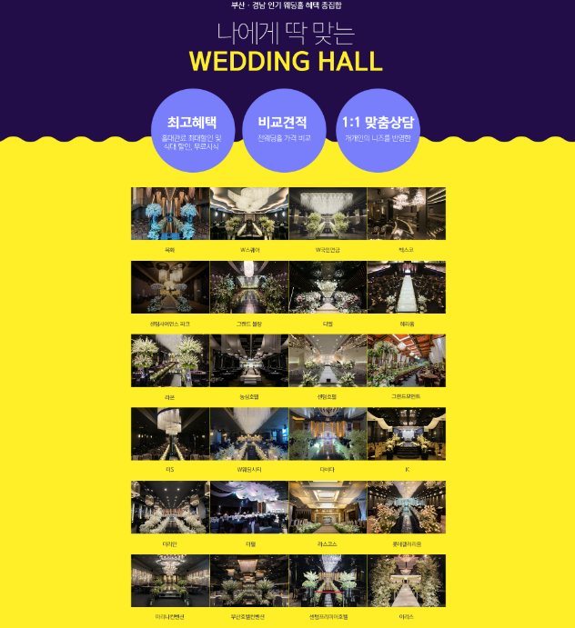
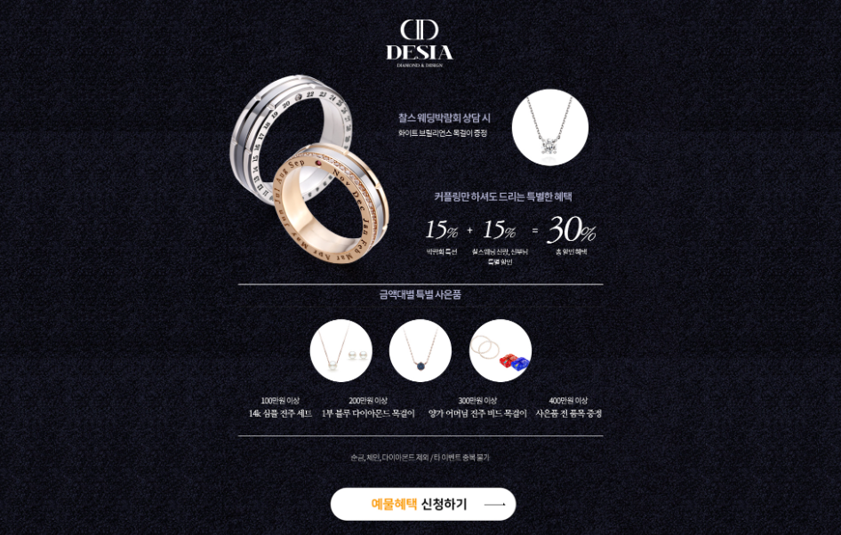
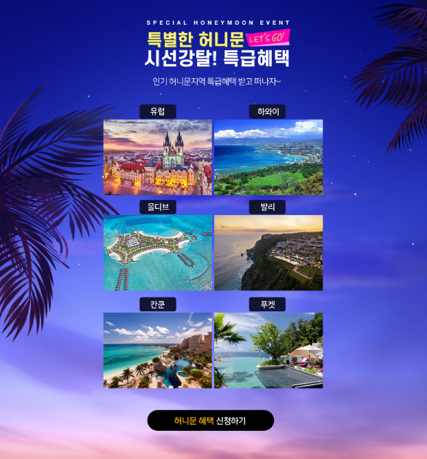
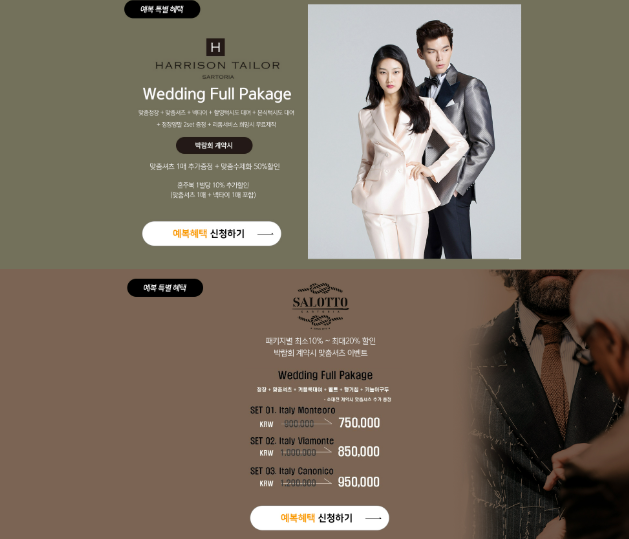

결혼 준비를 시작하면 웨딩홀과 스튜디오, 드레스, 메이크업, 예물과 예복, 혼수까지 여러 항목을 알아보게 됩니다. 부산 찰스 웨딩박람회를 알아보고 있다면 방문 전에 희망하는 예식 일정과 예상 예산을 정리하고 필요한 분야를 중심으로 정보를 비교해보는 것이 좋습니다.
부산 찰스 웨딩박람회에서는 무엇을 확인할까요?
웨딩박람회에서는 결혼을 준비하면서 필요한 여러 분야의 정보를 한자리에서 살펴보고 비교해볼 수 있습니다.
부산 지역에서 예식을 준비하고 있다면 원하는 예식 일정과 예상 예산을 기준으로 필요한 항목을 정리하면서 자신에게 맞는 결혼 준비 방향을 알아보는 데 활용할 수 있습니다.

웨딩홀과 스드메, 결혼 준비 항목을 비교해보세요
결혼 준비에는 예식장 선택부터 스튜디오, 드레스, 메이크업까지 다양한 결정이 필요합니다. 여기에 예물과 예복, 신혼여행과 혼수 준비까지 더해지기 때문에 전체적인 계획을 세우고 하나씩 비교하는 것이 좋습니다.

💒 웨딩홀
예식 날짜와 지역, 하객 규모를 기준으로 원하는 조건을 정리해보세요.
👰 스드메
각 상품의 기본 구성과 추가 선택사항을 함께 비교해보세요.
💍 예물·예복
필요한 품목과 선호하는 스타일을 미리 정하면 상담이 편리합니다.
🏠 혼수 준비
꼭 필요한 품목부터 우선순위를 정해 예산을 계획해보세요.
상담받고 싶은 내용을 방문 전에 정리해보세요
웨딩박람회를 방문하기 전에 두 사람이 원하는 결혼식의 방향과 우선순위를 이야기해두면 여러 정보를 비교할 때 도움이 됩니다. 특히 희망 예식일과 지역, 예상 하객 수는 미리 정리해두는 것이 좋습니다.

최종 결정 전 계약 내용을 꼼꼼하게 확인하세요
같은 종류의 웨딩 상품이라도 업체와 구성에 따라 실제 포함되는 서비스가 다를 수 있습니다. 표시된 가격뿐 아니라 추가 옵션과 별도 비용까지 함께 확인하는 것이 중요합니다.
계약을 결정하기 전에는 일정 변경 가능 여부와 취소 및 환불 조건, 추가금이 발생할 수 있는 항목 등을 확인하고 실제 계약서에 안내받은 내용이 정확히 기재되어 있는지 살펴보세요.
